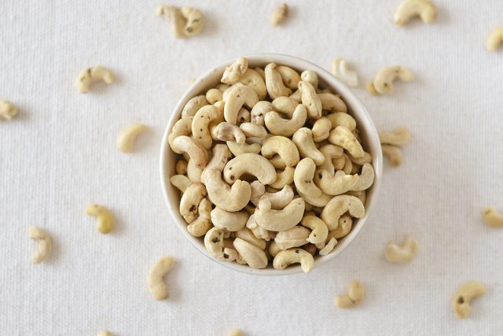
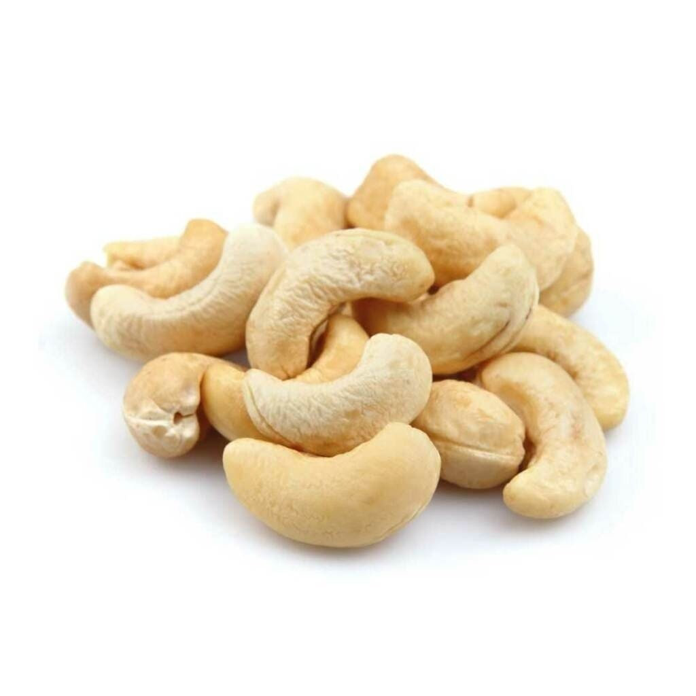
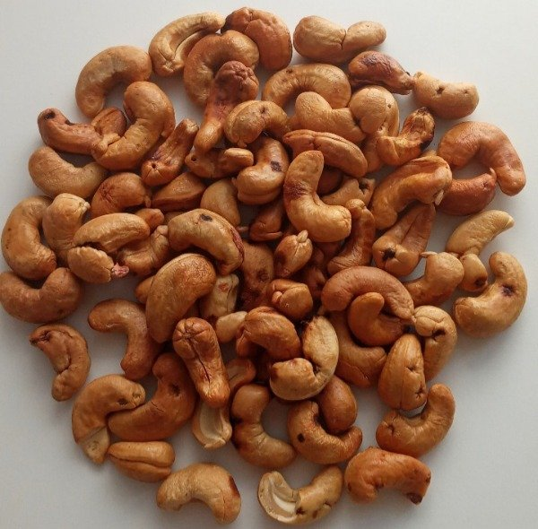

Castañas de caju
Ricos en magnesio y vitaminas, los anacardos ayudan a prevenir la fatiga. Ayuda a combatir el estrés, a reducir la presión arterial y a facilitar el sueño. Con un alto contenido en minerales, entre ellos el hierro, esta fruta ayuda a combatir la anemia. Sin dudas, el del cajú es un sabor exótico y aunque es prima hermana de las almendras, las nueces, las avellanas, las castañas o el pistacho, tiene sus particularidades que lo hacen único
Nuestras variedades de Castañas de caju
Castaña de caju W4
Castaña de caju W3
Castaña de caju tostada
PRECIOS
| Castaña de caju W4 | Castaña de caju W3 | Castaña de caju tostada | $1.347 | $1.720 | $1.472 |
|---|